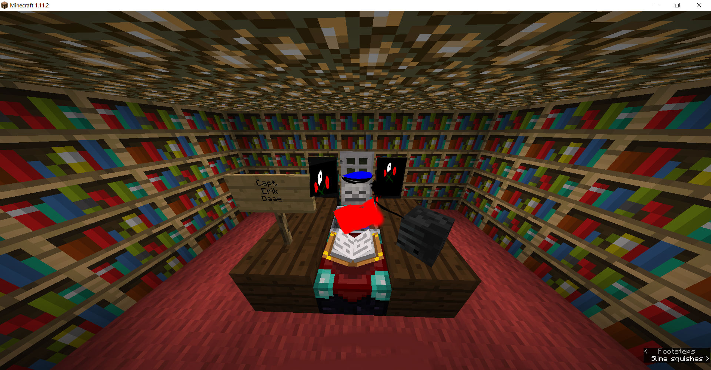
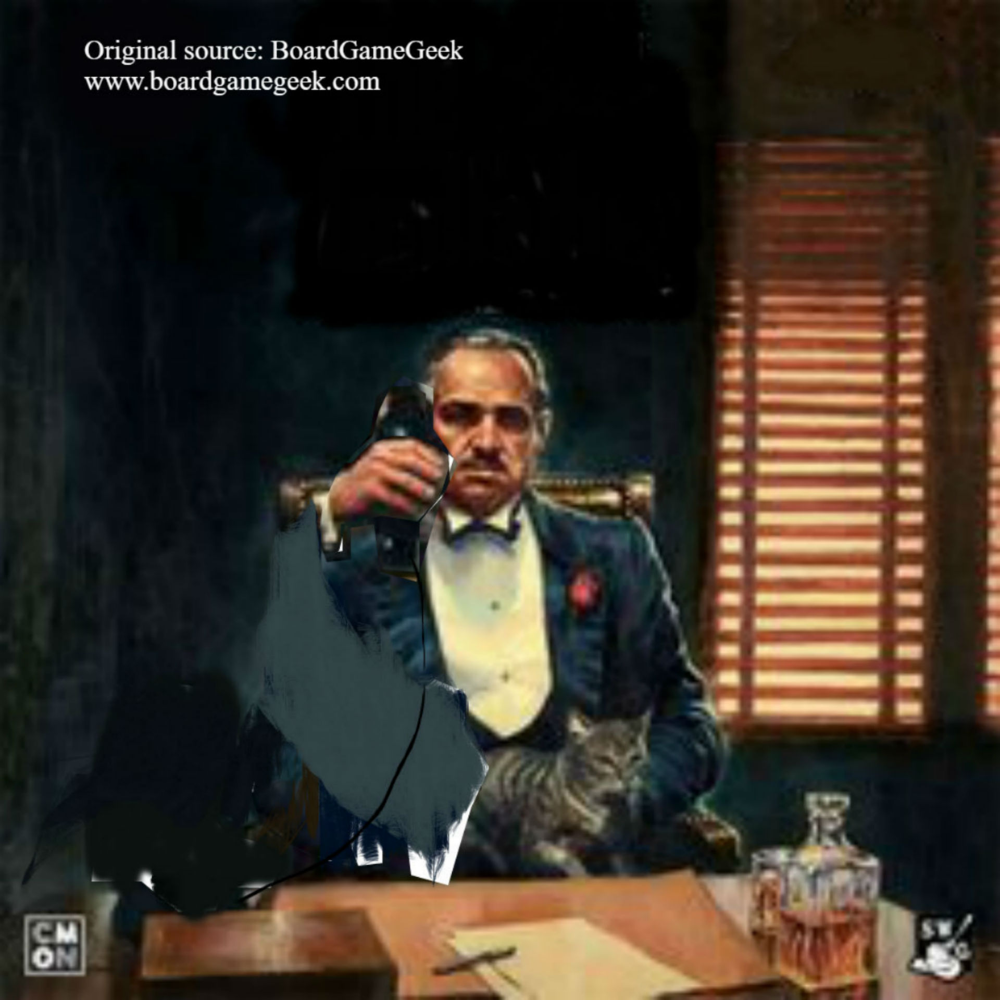
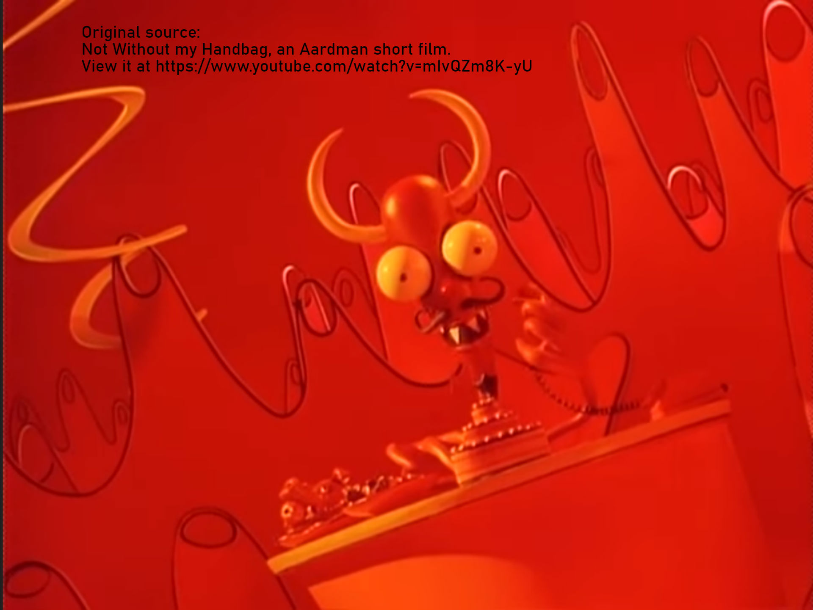
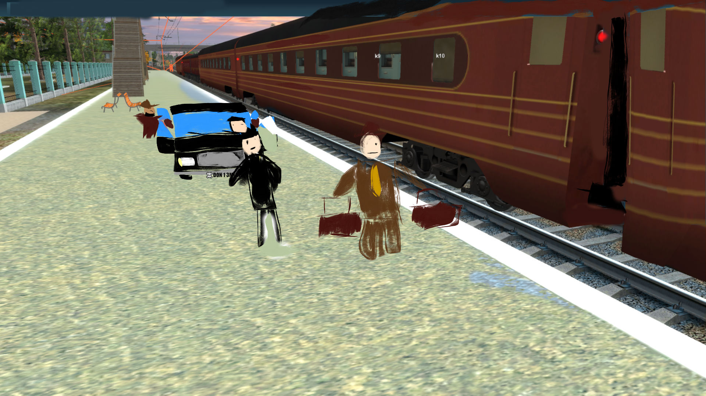
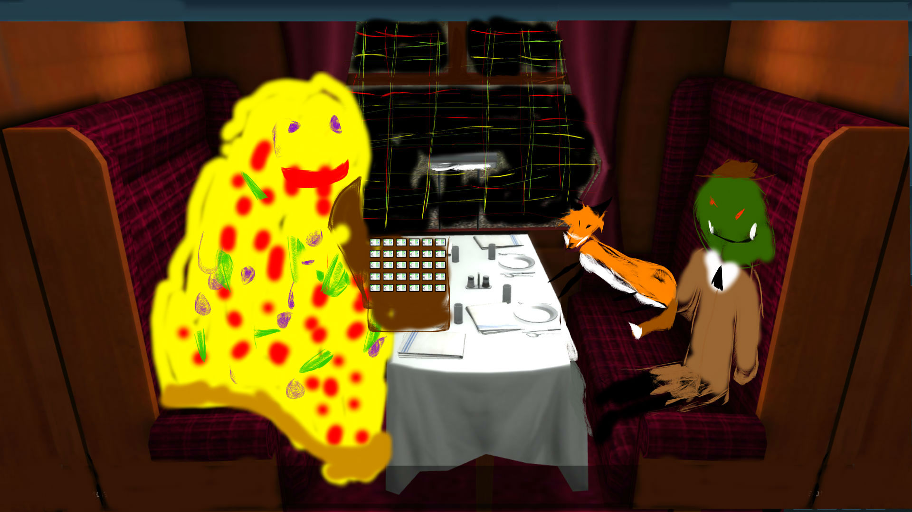
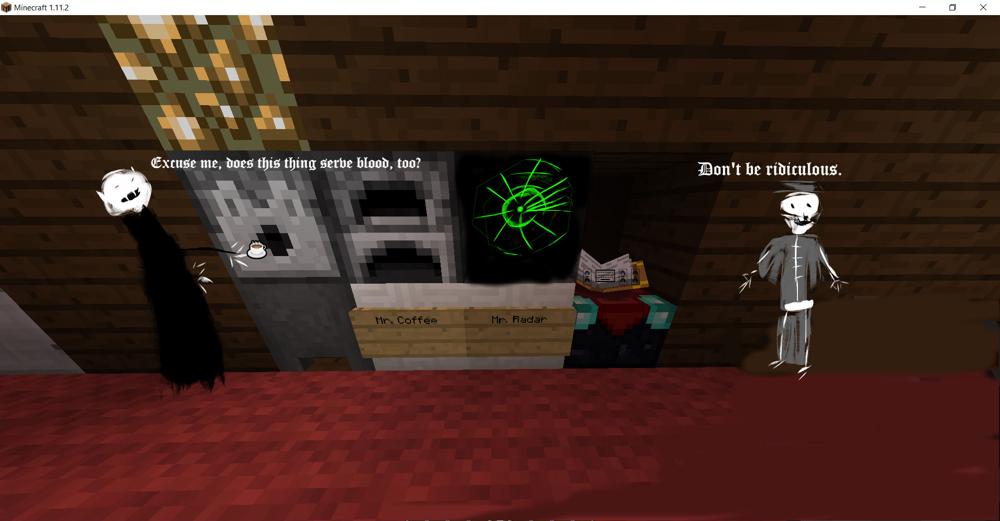
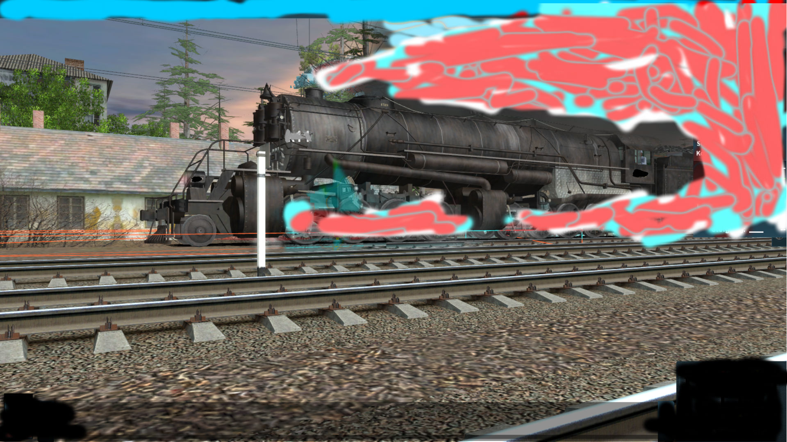

You may know the Millennium Falcon, Black Pearl, Flying Dutchman, or some other pirate ships. But I don’t suppose you’ve heard of the Phantom of the Mafia.
Well, it sails the sea, rails, and hyperspace in search of treasure. But it’s different from most pirate vessels. You needn’t look any further than its name to know why.



That’s right. Its crew are not technically pirates. They’re more like smugglers or privateers for hire, who often cater to ambitious, powerful, spoiled, aristocratic mobsters.

Whereas most pirate ships are devoid of luxury, the Phantom of the Mafia isn’t. You see, the clients often do their business on board, so it has to look presentable.

And indeed it does! The cafeteria could easily pass for a nightclub, and the offices in which business is done are well-furnished and thoroughly decorated.

The decks are coated in red carpet, the cabins resemble those of a yacht, and just like on the Spaceball 1, there are coffee makers next to the radar screens.
That being said, the Phantom of the Mafia is still an instrument for looting and smuggling. Therefore, the most common rooms on board are the high-security boxcars.

The reactor roars, the boiler bubbles, and the thrusters click and clack. Now batten down the hatches and fasten your seatbelts; The Phantom of the Mafia pulls out!